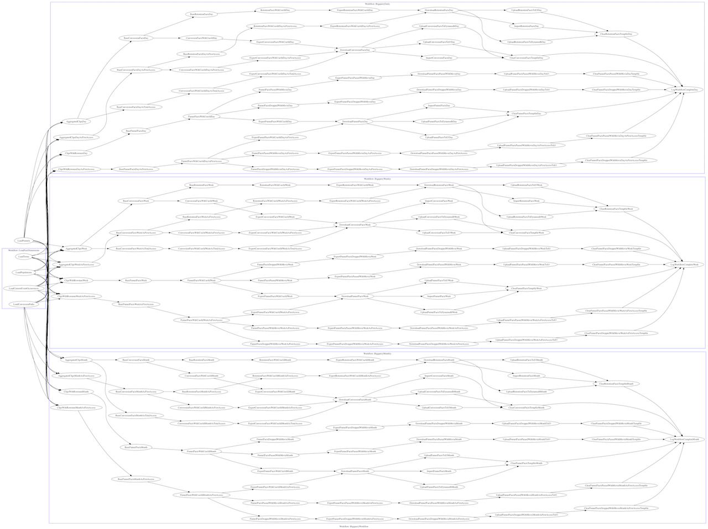

self.inspect
- @joker1007
- Repro inc. CTO (新米 CTO界で最弱)


MySQLで集計辛いですよね
DWH使いましょう
Bigqueryはイニシャルコストが超安い
APIクライアントの insert_jobを呼ぶ
@response = Bigquery.client.insert_job("project-id", configuration, @job_options)
apiクライアントがバグバグだったんですが、何回かPR送って結構直しました。
(昔、パラメーターにfalse指定したらnilになったりしてた…)
ジョブの実行は非同期なので、同期的に結果を得るにはwait処理が必要。
割と不安定で良く落ちるのでリトライ処理必須。
自前でAPIクライアントのラッパークラス作って対応している。
(gem化してない)
SELECT
insight_id AS insight_id,
retention_converged_at_zoned,
conversion_started_at_zoned AS conversion_started_at_zoned,
custom_event_id AS custom_event_id,
0 AS retention_custom_event_id,
retention_count,
frequency_threshold,
conversion_count,
NEST(user_id) AS user_id
FROM
<% retention_count_range = (1..14) -%>
<% frequency_range = (1..5) -%>
<% retention_count_range.each do |i| -%>
<% frequency_range.each do |j| -%>
<% next if ENV["OLDEST_CONVERSION_FACT"] && Date.parse(ENV["OLDEST_CONVERSION_FACT"]) > target.ago(i.day) -%>
(
SELECT
/* 省略 */
),
<% end -%>
<% end -%>
GROUP BY
insight_id,
retention_converged_at_zoned,
conversion_started_at_zoned,
custom_event_id,
retention_custom_event_id,
retention_count,
frequency_threshold,
conversion_count
BigqueryはUNIONが早いので、一見アホっぽいクエリが早い
(billingTierが上がるけど)
解決するためにrukawaを作った
現在のバッチフローはこんな感じ 
10GB/dayぐらいのデータ量で、日に2回のバッチ
これで、月に￥15,000、安い！
(まあ、苦労も多いけど……)
集計したら当然データを出さなきゃいけない
google-api-clientがBqのデータ受け取るのに向いてない
(representableの使い方を間違ってる……)
端的に言うと一行ごとにオブジェクトマッピングが走ってクソ重い
普通にJSONをOjとかでパースした方が早い
Refinementで局所的にオブジェクトマッパーを差し替える
module Bigquery
class SimpleHashRepresentable
def initialize(instance = {})
@instance = instance
end
def from_json(body, options)
@instance.merge!(Oj.load(body))
end
end
module HashrizeGetJobQueryResults
refine Google::Apis::BigqueryV2::BigqueryService do
def get_job_query_results(project_id, job_id, max_results: nil, page_token: nil, start_index: nil, timeout_ms: nil, fields: nil, quota_user: nil, user_ip: nil, options: nil, &block)
command = make_simple_command(:get, 'projects/{projectId}/queries/{jobId}', options)
command.response_representation = SimpleHashRepresentable
command.response_class = Hash
command.params['projectId'] = project_id unless project_id.nil?
command.params['jobId'] = job_id unless job_id.nil?
command.query['maxResults'] = max_results unless max_results.nil?
command.query['pageToken'] = page_token unless page_token.nil?
command.query['startIndex'] = start_index unless start_index.nil?
command.query['timeoutMs'] = timeout_ms unless timeout_ms.nil?
command.query['fields'] = fields unless fields.nil?
command.query['quotaUser'] = quota_user unless quota_user.nil?
command.query['userIp'] = user_ip unless user_ip.nil?
execute_or_queue_command(command, &block)
end
end
end
end
バルクで大量に引っ張ってくる時はembulkを使う
データ量が増えてもスケールさせたい
要は、いざって時に金で殴れるようにしたい
embulkはmapreduce executorでHadoopクラスタ上で実行可能
でもお金も人手も無いから、EMRで必要な時だけサクっと立てて動かしたい

Emrakul.run(
"embulk_config.yml", #embulkのconfig
"embulk_gemfile", # embulkが利用するgemfile
"~/emr-ec2-key.pem", # EMRのノードに接続するための鍵
emr_config: "emr_config.yml", # EMRの起動設定を書いたyml
additional_scripts: ["install_jars.sh"], # setup時に追加で実行するスクリプト
additional_uploads: ["google_api_key.json"], # その他必要な鍵等
)
(EMRがややこしいせいで、オプションが多い……)
keep_job_flow_alive_when_no_stepsをtrueにmapreduce.map.speculativeをfalseにmapreduce.task.timeoutを長くする詳しくは AWSのEMRでembulkのmapreduce executorを実行するメモ - Qiita
emrakulの中にもsampleの設定を同梱している
GCPのData proc上でembulkが実行できるかは今後検証予定
(GCPの方が安く済みそう)
データ量が増えても札束で殴るための準備完了
Money is Power !! 
Happy 集計ライフへ！
皆さんもBigqueryどうですか！